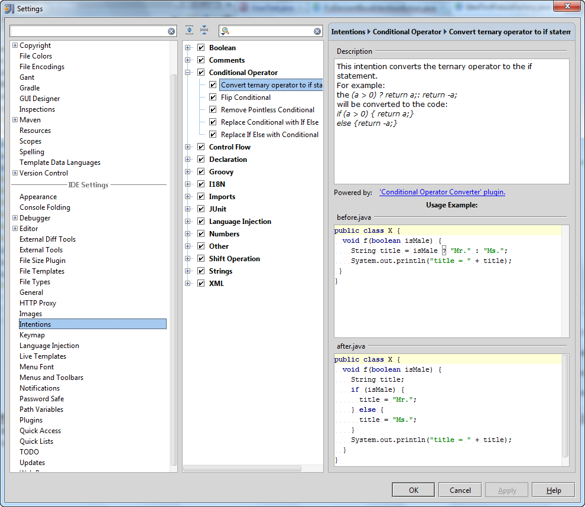
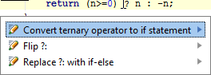

Code Intentions
This topic describes the conditional_operator_intention, a sample plugin that adds a new intention action to the IntelliJ Platform Intentions list. In addition, the sample plugin contains a JUnit-based test.
About Intention Actions
The IntelliJ Platform analyzes your code and helps handle situations that may result in errors. When a possible problem is suspected, the IDE suggests an appropriate intention action, denoted with special icons. For more information, refer to Intention Actions in the IntelliJ IDEA Web Help.
You can view a list of all available intention actions using the Intention List provided by the IDE.
To display Intention List
- Open the Settings dialog box.
- Under IDE Settings, click Intentions. This displays the list of all intention actions currently available in IntelliJ IDEA.
- The intention actions are grouped according to the areas of their use.
- To enable/disable an intention action, select/deselect the check box to its left.
Techniques Used
The conditional_operator_intention sample plugin illustrates the use of the following techniques:
- How to analyze a PSI tree.
- How to find a Java token of interest in the PSI tree.
- How to invoke a quick fix action for a token element under cursor using the
PsiElementBaseIntentionActionclass. - How to create a JUnit test for this plugin using the
IdeaTestFixtureFactoryclass.
Sample Plugin
The ConditionalOperatorConverter sample plugin is available in the <%IntelliJ SDK Docs project%>/code_samples/conditional_operator_intention directory.
When launched, this plugin adds the Convert ternary operator if statement item to the Conditional Operator node in the IDEA Intentions list:

Running the Plugin
To run the sample plugin
- Start IntelliJ IDEA and open the conditionalOperatorConvertor plugin project saved into the
<%IntelliJ SDK Docs project%>/code_samples/conditional_operator_intentiondirectory. - Open the Project Structure dialog and ensure that the project settings are valid for your environment.
- If necessary, modify the Run/Debug Configurations and Run the plugin by choosing the Run on the main menu.
How does it work?
The plugin analyzes symbols under the cursor in your code opened in the IDEA editor. If the cursor is positioned on the “?” conditional operator, IntelliJ IDEA proposes to replace this conditional (ternary) operator with the “if-then-else” statement:

In this example, the code:
return (n>=0) ? n : -n;
will be replaced with the code:
if ((n>=0)) {
return n;
} else {
return -n;
}
Testing the Plugin
The sample plugin contains the YourTest Java class in the testSource/testPlugin/ package and the test data in the testData/ directory.
To perform the plugin test, run the YourTest.test() method.
For detailed information about testing and all related procedures, refer to Testing in the IntelliJ IDEA Web Help.